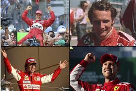
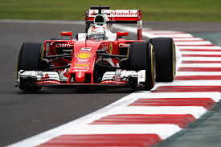
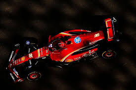

Historia y Logros de Ferrari en la Fórmula 1

1. Fundación de Scuderia Ferrari (1929): • Aunque la primera participación de Ferrari en la Fórmula 1 se remonta a 1950, la escudería Scuderia Ferrari fue fundada en 1929 por Enzo Ferrari, inicialmente como un equipo para competir en otras categorías del automovilismo. No fue hasta 1950 que Ferrari debutó en la Fórmula 1, en el primer campeonato mundial de la F1.
2. Primer Campeonato Mundial (1951):
• Ferrari consiguió su primera victoria en la Fórmula 1 en 1951 con el piloto José Froilán González, quien ganó el Gran Premio de Gran Bretaña. Ese mismo año, Ferrari se alzó con su primer Campeonato Mundial de Constructores.

3. Pilotos Icónicos:
• Ferrari ha tenido una serie de pilotos legendarios a lo largo de los años, incluyendo a Juan Manuel Fangio, Alberto Ascari, Niki Lauda, Gilles Villeneuve, Michael Schumacher, y Kimi Räikkönen. • Michael Schumacher es quizás el piloto más exitoso de Ferrari en la F1. Durante su tiempo en el equipo (2000-2004), Schumacher ganó cinco campeonatos mundiales consecutivos (2000-2004), llevando a Ferrari a una era de dominio casi absoluto en la Fórmula 1. Ferrari también se destacó como uno de los equipos más exitosos de la historia durante ese período.

4. Era Moderna:
• Después de la retirada de Schumacher en 2006, Ferrari continuó siendo un competidor fuerte. En años recientes, pilotos como Fernando Alonso (2009-2014), Sebastian Vettel (2015-2020) y Charles Leclerc (a partir de 2019) han representado a Ferrari, manteniéndolo como uno de los equipos más relevantes de la F1. • Sebastian Vettel logró 4 victorias en Grandes Premios con Ferrari, aunque no pudo ganar el campeonato mundial, mientras que Charles Leclerc mostró un rendimiento impresionante, obteniendo varias victorias en las primeras temporadas de su carrera con el equipo.
5. La Rivalidad con Mercedes y Red Bull:
• En los últimos años, Ferrari ha estado en una feroz competencia con equipos como Mercedes y Red Bull Racing por el dominio de la Fórmula 1. En particular, Mercedes ha sido un contendiente muy fuerte desde 2014, con Lewis Hamilton ganando varios campeonatos, mientras que Red Bull también ha estado en la pelea, especialmente en los últimos años con Max Verstappen.
Filosofía de Ferrari en la Fórmula 1
1. Innovación y Tecnología:
• Ferrari ha sido siempre un pionero en la tecnología de los autos de Fórmula 1. Muchos de los avances técnicos desarrollados por Ferrari en la F1 han influido en la industria automovilística en general. La marca tiene una reputación de alta ingeniería y diseño de precisión, lo cual se refleja en sus autos de carreras, tanto en términos de motores como de aerodinámica.

2. Mentalidad Competitiva:
• Ferrari es un equipo que ha mostrado una gran determinación por mantenerse a la vanguardia de la F1, y su legado está basado en la competencia, la pasión y la constante búsqueda de la perfección. La filosofía de “Competizione” (competencia) de Ferrari está en el corazón de cada uno de sus coches de F1, y la marca siempre ha estado dispuesta a invertir en la innovación y el talento humano para asegurar su lugar entre los mejores.
3. Afición y Popularidad Global:
• Ferrari tiene una base de seguidores envidiable en todo el mundo. Su legado en la Fórmula 1, combinado con su fama como fabricante de autos de lujo, hace que el equipo tenga una de las mayores bases de fanáticos de cualquier deporte motor.
4. El Futuro de Ferrari en la F1:
• En años recientes, Ferrari ha trabajado en mejorar su rendimiento con nuevos coches y motores más eficientes, y su enfoque se centra en encontrar el equilibrio perfecto entre velocidad y fiabilidad. • La escudería también ha estado trabajando en sus propias estrategias para alcanzar la competitividad con equipos como Mercedes y Red Bull, con nuevos pilotos y personal técnico que buscan llevar a Ferrari de nuevo al campeonato mundial.

Ferrari en la Fórmula 1: Resumen de Títulos Importantes
• Campeonatos Mundiales de Constructores: 16 títulos (el primero en 1961 y el más reciente en 2008).
• Campeonatos Mundiales de Pilotos: 15 títulos (incluyendo los de Michael Schumacher y Juan Manuel Fangio).
• Victorias en Grandes Premios: Ferrari ha ganado más de 230 Grandes Premios en su historia.
Ferrari sigue siendo uno de los nombres más respetados en el automovilismo, y su presencia en la Fórmula 1 sigue siendo fuerte. El futuro de Ferrari en la F1 es prometedor, y la escudería continúa luchando por alcanzar nuevos éxitos en la era moderna de este deporte.